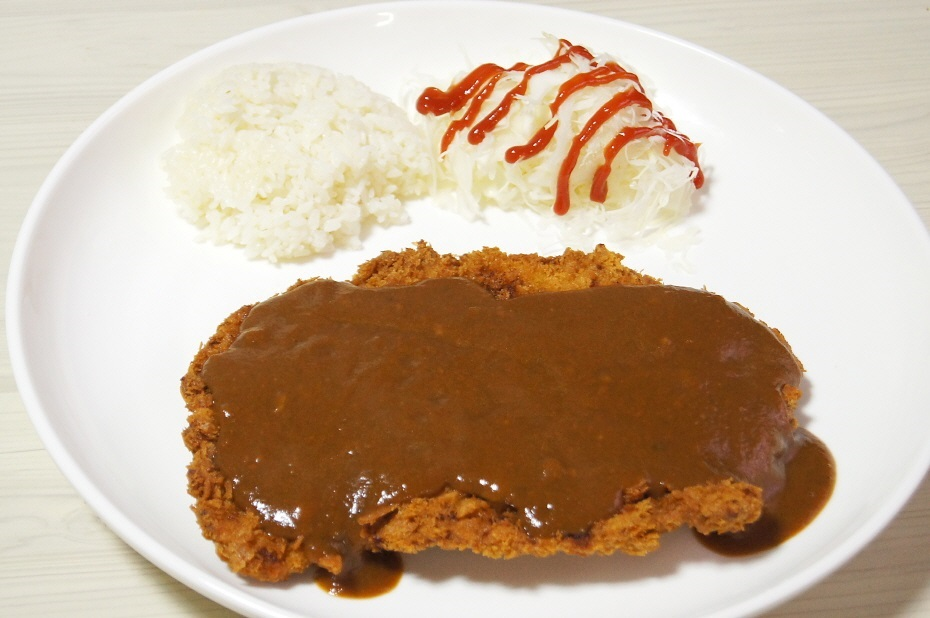

대학생들은 언제나 배고프지만
돈이 항상 부족하다
학식은 싸지만 맛이 없고...
외부 음식은 맛있지만 가성비가 떨어진다...
하지만 예외는 없을까?
맛있는 학식, 가성비 좋은 외부 음식을 찾기 위해
오늘도 한 숟가락 떠올린다!
별 0~5개까지의 등급으로
맛 비쥬얼 가성비를 등급매겨
가난한 대학생들에게
걸러 리스트와 챙겨 리스트로
최고의 가성비를 선사한다!
미식가들에게 미슐랭이 있다면
대학생들에겐 민슐랭이 있다!!

본 사이트의 모든 평가는 주관적인 평가이며 본 사이트에 등장하는 어떠한 음식점에서도 사사로운 이득을 취하지 않았음을 강조합니다. 또한 음식을 먹었을 때 발생하는 어떠한 문제에 대해서도 본 사이트는 책임지지 않습니다.